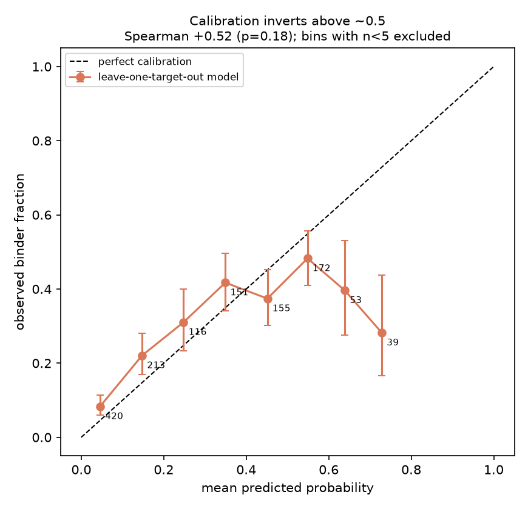
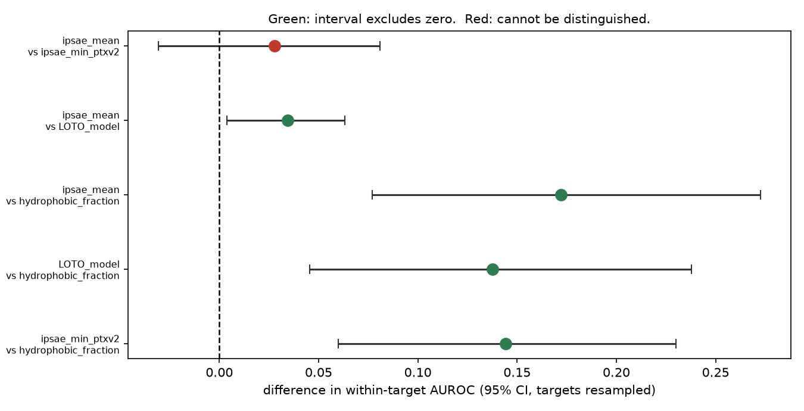
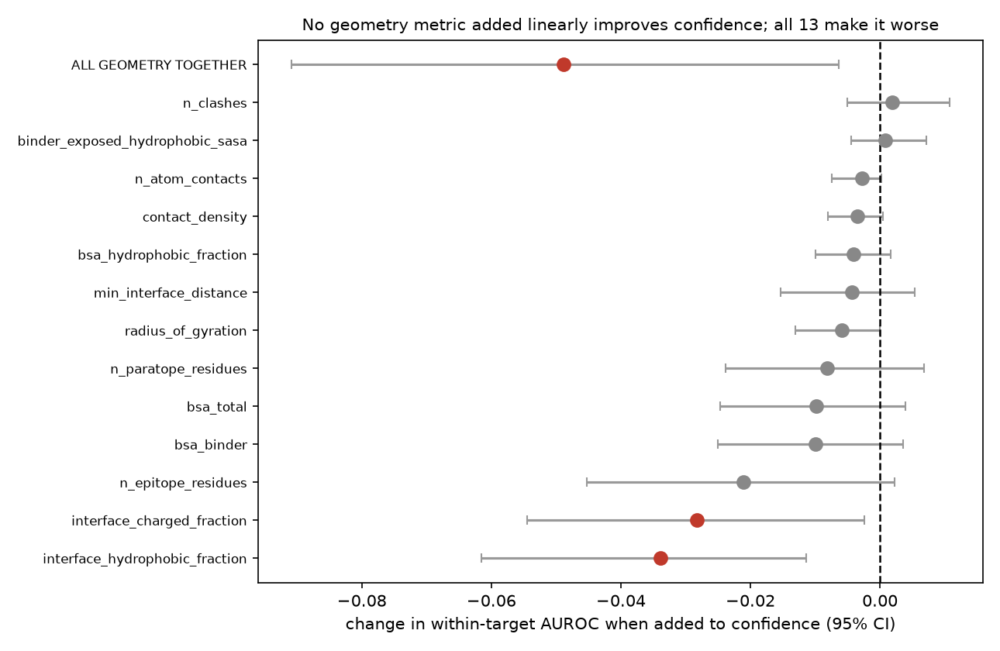
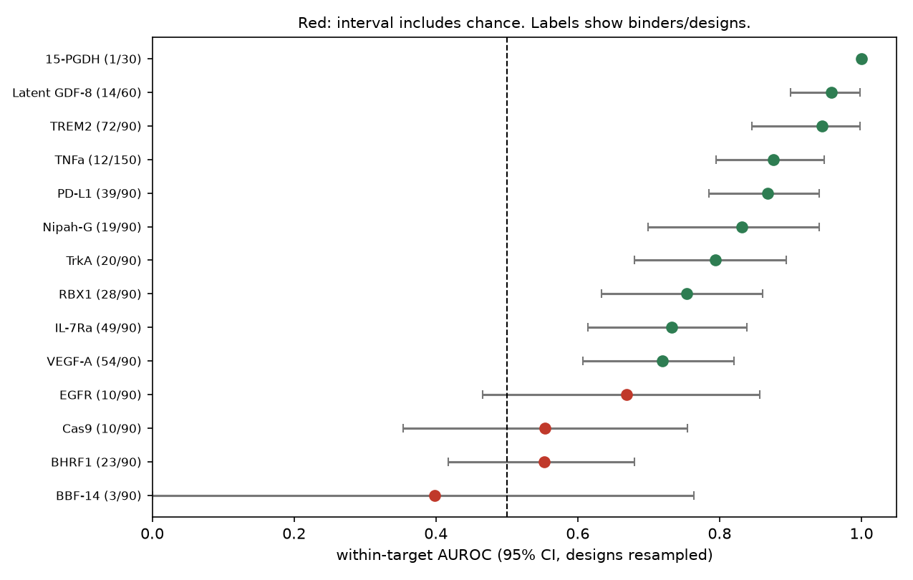
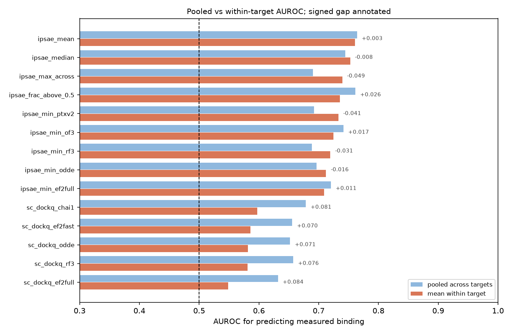
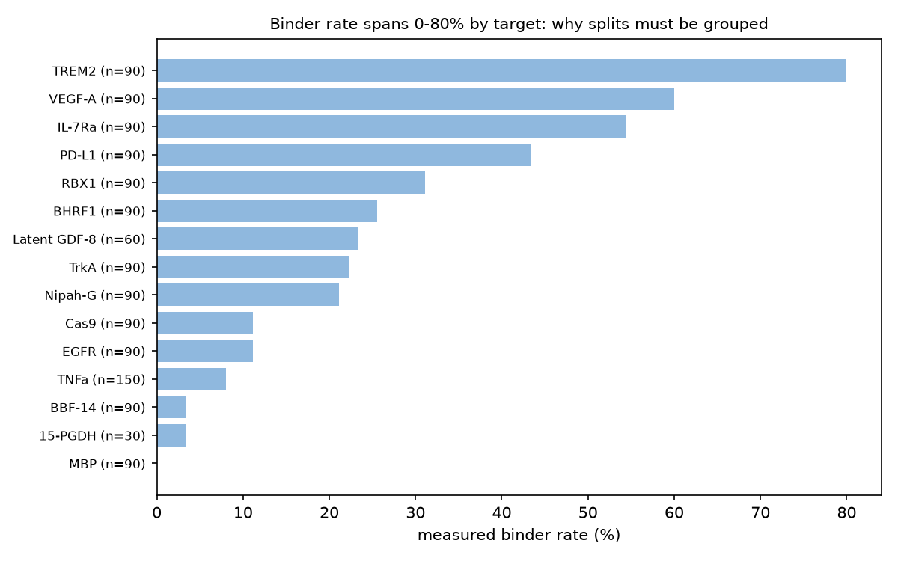
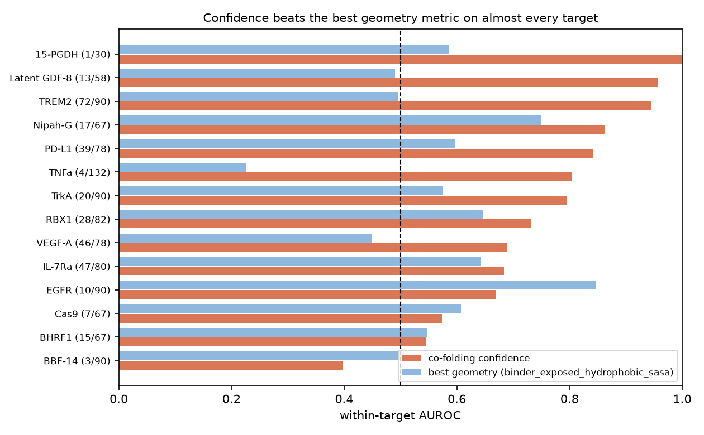

Designing candidate proteins is now cheap. Testing one in a lab is not, so almost everyone ranks candidates by a structure-prediction confidence score and builds the top twenty. This is a retrospective check of that habit against 1320 published designs whose wet-lab outcome is known.
The result
Co-folding confidence beats a deliberately stupid baseline — hydrophobic content alone — by +0.172 within-target AUROC (95% CI +0.077 to +0.273, sign held in 100% of bootstrap replicates). That is a real signal and it is worth using.
Three things about it are less comfortable. Averaging ten structure predictors is not measurably better than using one (+0.028, CI -0.031 to +0.081), which is a tenfold saving in co-folding compute for no measurable loss of ranking quality. Fitting a model over all the score columns is worse than their plain average (+0.034 in the average's favour, CI +0.004 to +0.063). And the reliability curve inverts where the decision is actually made: designs predicted at 0.729 bound only 28.2% of the time (n = 39, CI 16.5% to 43.8%), worse than mid-range predictions. Taking the top twenty by score spends the budget in the least reliable part of the metric.


The second study
Design pipelines also compute the geometry of the interface: buried surface area, atom contacts, hydrogen bonds, charge and hydrophobic composition. It is slower and more elaborate than reading off a confidence number. On 1189 designs with released coordinates, not one of 13 geometry metrics improved a model that already had the confidence score; 2 measurably hurt, and all thirteen together scored -0.049 lower (CI -0.091 to -0.006, sign held 99%).

Overath et al. (2025), pooling 3,766 experimentally characterised binders, report the opposite: confidence multiplied by interface geometry beats either on its own, for two features I had not computed. Their combination is a product and the test above adds geometry as a linear term — and a logistic model in (confidence, geometry) cannot represent confidence × geometry unless the interaction is handed to it explicitly. So that test did not address their claim; it addressed a weaker one.
So I ran the replication, with its decision rules written down first.
The replication
Both of their features ended up computed. Shape complementarity has a licence-free definition, so I reimplemented it with the published parameters and tested the product their way and mine, on 1153 designs. Interface energy needs Rosetta, which has no Windows build — it runs under WSL — and is only meaningful where a design model carries side chains, which most do not. That arm is reported separately below, because it is a different and much weaker test.
| Test | Confidence | × geometry | Difference | 95% CI |
|---|---|---|---|---|
| Average precision (their measure) | 0.582 | 0.521 | -0.061 | -0.108 to -0.017 |
| Within-target AUROC (mine) | 0.746 | 0.698 | -0.048 | -0.091 to -0.008 |
| Interaction term in the fitted model | — | — | -0.002 | -0.019 to +0.014 |
Both measures agree, so the choice between them is not what decides it, and a model handed the interaction explicitly does not improve either. At precision@20 — the number a twenty-design submission actually faces — confidence gets 0.433 and the product 0.400, against a 27.0% base rate.
This is the combination they report as strongest, and on this dataset it cannot be tested. A Rosetta energy means nothing on a backbone-only model, so the arm runs on just 173 labelled designs across 12 targets, at a 16.2% binder rate against 26.8% overall — a harder and unrepresentative slice. Average precision goes from 0.515 to 0.410, a difference of -0.106 (CI -0.269 to +0.044); within-target AUROC moves -0.082 (CI -0.340 to +0.224). Every interval straddles zero by a wide margin. The point estimates lean the same way as the other arm, and they are worth nothing on their own.
That the setup itself is sound was checked first, and it is the part I would defend: Rosetta's buried-surface-area number agrees with the one my own code computes at 0.947 correlation over 223 designs, with a median ratio of 1.040 — two implementations written independently, agreeing closely. What fails is not the measurement but the material: only 51.6% of these deposited models reach even a negative interface energy, where a real binding interface sits tens of units below zero.
One detail from the first arm is worth reading carefully: the raw product hurts while the fitted interaction is merely inert. An unweighted product forces the geometry in at full strength, so its noise lands in the ranking; a model that can choose the coefficient sets it near zero. Both say the same thing — there is no signal here for the model to find.
Not that they are wrong. The decision rule I wrote down before running this says so explicitly, and the reasons are real: their corpus is three times larger; their binder rate is 11.6% against 27.0% here; they computed geometry on complexes they re-predicted while mine comes from the designers' own models; only 191 of these binder models carry side chains at all, and shape complementarity is a property of a surface those models do not have; and my implementation is independent of Rosetta's.
The honest claim is narrower and still worth having: on this dataset, the product form does not rescue geometry — and the obvious objection to the earlier result, that a linear model could not have seen a multiplicative effect, has now been closed by direct test rather than by argument.
Reimplementing their statistic is also where the most useful bug of this work turned up. Checked against a crystallographic antibody–antigen interface with a published value, my first version returned 0.457 against a band of 0.64–0.68: it was missing Lawrence and Colman's 1.5 Å peripheral trim. With the trim it returns 0.612, and a sweep over the trim width peaks at exactly the published 1.5 Å. A smaller probe radius would land it inside the band; I did not use one, because choosing a parameter because it reproduces the expected answer is fitting the method to the result. The residual 0.082 is recorded instead.
The same paper agrees with the first study on both of its transferable conclusions: ipSAE-family confidence is the best single predictor, and pooling features across predictors does not help. Independent corroboration on three times the data is worth more than a novelty claim, so it is worth saying plainly that this is not the first time the question has been asked — only the first time it has been asked of this dataset, which is one campaign, one rubric for calling a binder, and two independent labs measuring the same molecules.
Method
Most of the effort here went into not fooling myself, and that is the part worth reading.




What I got wrong
This section is here because it is the most informative part of the work. All three were found by reading the output against itself or against the literature, none by new data, and each is logged with the reason.
The first pass reported differences between metrics as facts while putting intervals only on the individual values. Adding paired intervals withdrew both: averaging ten predictors beats the best single one became +0.028 with a CI straddling zero, and cross-predictor disagreement is usable signal did not survive being tested conditionally on the mean it correlates with. The practical advice reversed: run one predictor, not ten.
The geometry report stated that designs which bound had fewer contacts and less buried surface, and read a large contact patch as marking an implausible pose. That comparison was pooled across targets, and the targets with the biggest interfaces are the ones nobody could bind. Computed inside each target, on the same file, every sign reverses:
| Metric | Pooled | Within target | Targets positive |
|---|---|---|---|
| interface atom contacts | -51.1 | +31.2 | 9/14 |
| buried surface area | -136.6 | +72.8 | 9/14 |
The study's actual conclusion was unaffected, because the conditional test was within-target throughout — but the most quotable sentence in the report contradicted its own table three paragraphs earlier. It is withdrawn, and the code now returns the pooled and within-target differences together, with a test that fails if any report sentence is generated from the pooled one.
Two documents in the repository claimed this question had not been asked before. It had: see the comparison with Overath et al. above. The accurate claim, which survives, is that there is no prior analysis of this dataset. Saying where my result conflicts with the literature, and which experiment would settle it, is a stronger position than a novelty claim a reader can falsify in one search.
Status